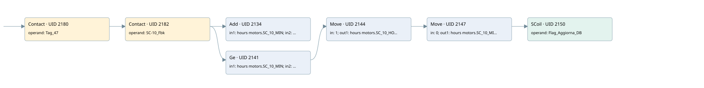

sc-10
time work motor · 검색 색인 순서 36 · 원본 내부 NID 추정 39
백업 PLF 원본의 2888932 바이트 위치에서 복원한 XML. 검색 문서 1037의 객체 키 161022004212000000000000와 연결했다. 이름 해석 12/12개. 남은 RefId는 상수 또는 미해석 참조다.
연결 구조 다시 그리기
원본 Part/PCon/Wire를 이용한 연결도다. TIA 화면의 래더 배치 또는 실행 결과를 재현한 그림은 아니다. 핀 연결은 아래 표와 원본 XML을 기준으로 읽는다. 노드 위에 마우스를 두면 피연산자 이름을 볼 수 있다.

접점·코일·블록과 피연산자
| Part UID | Gate | Negated 핀 | 연결 피연산자 |
|---|---|---|---|
| 2180 | Contact | operand = Tag_47 | |
| 2182 | Contact | operand = SC-10_Fbk | |
| 2134 | Add | in1 = hours motors.SC_10_MIN; in2 = 1; out = hours motors.SC_10_MIN | |
| 2141 | Ge | in1 = hours motors.SC_10_MIN; in2 = 60 | |
| 2144 | Move | in = 1; out1 = hours motors.SC_10_HOUR | |
| 2147 | Move | in = 0; out1 = hours motors.SC_10_MIN | |
| 2150 | SCoil | operand = Flag_Aggiorna_DB |
접점 경로를 펼친 조건식
Contact·O/A·비교기의 원본 연결을 읽기 쉽게 펼친 보조 해석이다. POWER는 전원 레일 시작을 뜻한다. 호출 블록·에지·타이머의 내부 동작과 다중 쓰기 순서는 이 표로 실행 검증하지 않았다. 미해석 핀과 RefId는 원문 연결표에서 확인한다.
| UID | 동작 | 대상 | 원본 접점 경로 | 내용 |
|---|---|---|---|---|
| 2144 | Move | hours motors.SC_10_HOUR | ((Tag_47 AND SC-10_Fbk) AND [hours motors.SC_10_MIN >= 60]) | Move 입력 1 |
| 2147 | Move | hours motors.SC_10_MIN | Move UID 2144.eno (블록 동작 확인) | Move 입력 0 |
| 2150 | SCoil | Flag_Aggiorna_DB | Move UID 2147.eno (블록 동작 확인) | 조건 성립 시 Set |
원본 배선 연결
| Wire UID | 동일 Wire 연결 끝점 |
|---|---|
| 2184 | Powerrail {} ↔ Part 2180.in |
| 2163 | ORef 2151 (Tag_47) ↔ Part 2180.operand |
| 2181 | Part 2180.out ↔ Part 2182.in |
| 2164 | ORef 2152 (SC-10_Fbk) ↔ Part 2182.operand |
| 2183 | Part 2182.out ↔ Part 2134.en ↔ Part 2141.pre |
| 2165 | ORef 2153 (hours motors.SC_10_MIN) ↔ Part 2134.in1 |
| 2166 | ORef 2154 (1) ↔ Part 2134.in2 |
| 2167 | Part 2134.out ↔ ORef 2155 (hours motors.SC_10_MIN) |
| 2168 | ORef 2156 (hours motors.SC_10_MIN) ↔ Part 2141.in1 |
| 2169 | ORef 2157 (60) ↔ Part 2141.in2 |
| 2170 | Part 2141.out ↔ Part 2144.en |
| 2172 | ORef 2158 (1) ↔ Part 2144.in |
| 2174 | Part 2144.eno ↔ Part 2147.en |
| 2173 | Part 2144.out1 ↔ ORef 2159 (hours motors.SC_10_HOUR) |
| 2175 | ORef 2160 (0) ↔ Part 2147.in |
| 2177 | Part 2147.eno ↔ Part 2150.in |
| 2176 | Part 2147.out1 ↔ ORef 2161 (hours motors.SC_10_MIN) |
| 2178 | ORef 2162 (Flag_Aggiorna_DB) ↔ Part 2150.operand |
식별자 해석 근거 12개
| ORef UID | RefId | 이름 | IdentXmlPart 파일 | 해석 방법 |
|---|---|---|---|---|
| 2151 | 1 | Tag_47 | 0613-IdentXmlPart.xml | UID/RID + search-text + NID agreement |
| 2152 | 236 | SC-10_Fbk | 0613-IdentXmlPart.xml | UID/RID + search-text + NID agreement |
| 2153 | 238 | hours motors.SC_10_MIN | 0615-IdentXmlPart.xml | UID/RID + search-text + NID agreement |
| 2154 | 7 | 1 | 0616-IdentXmlPart.xml | literal candidate: UID/RID/NID + nearby named declarations + search-text agreement |
| 2155 | 238 | hours motors.SC_10_MIN | 0615-IdentXmlPart.xml | UID/RID + search-text + NID agreement |
| 2156 | 238 | hours motors.SC_10_MIN | 0615-IdentXmlPart.xml | UID/RID + search-text + NID agreement |
| 2157 | 8 | 60 | 0616-IdentXmlPart.xml | literal candidate: UID/RID/NID + nearby named declarations + search-text agreement |
| 2158 | 7 | 1 | 0616-IdentXmlPart.xml | literal candidate: UID/RID/NID + nearby named declarations + search-text agreement |
| 2159 | 240 | hours motors.SC_10_HOUR | 0615-IdentXmlPart.xml | UID/RID + search-text + NID agreement |
| 2160 | 12 | 0 | 0616-IdentXmlPart.xml | literal candidate: UID/RID/NID + nearby named declarations + search-text agreement |
| 2161 | 238 | hours motors.SC_10_MIN | 0615-IdentXmlPart.xml | UID/RID + search-text + NID agreement |
| 2162 | 13 | Flag_Aggiorna_DB | 0613-IdentXmlPart.xml | UID/RID + search-text + NID agreement |
검색 코드 보조 자료
참조 명칭을 찾기 위한 자료이며 실행 순서나 AND/OR 관계는 위 연결표로 확인한다.
"tag_47" "sc-10_fbk" add "hours motors".sc_10_min 1 "hours motors".sc_10_min 60 move 1 move 0 "flag_aggiorna_db" "hours motors".sc_10_hour "hours motors".sc_10_min "hours motors".sc_10_min